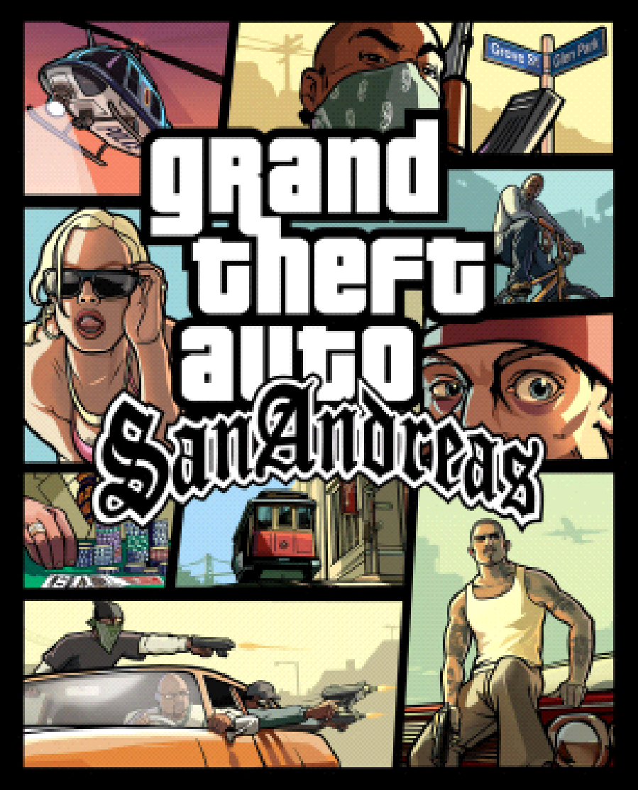

5. GTA San Andreas (2004)

É o quinto título da série Grand Theft Auto e foi lançado em 2004 para PlayStation 2, Xbox e PC. O jogo é
ambientado em 1992 em uma região fictícia chamada San Andreas, que é baseada em estados do sul dos EUA, incluindo
California e Nevada.
an
O jogador controla o personagem principal Carl “CJ” Johnson, um membro de uma gangue de rua de Los Santos que
retorna à cidade depois de ficar fora por cinco anos. CJ se envolve em uma série de conflitos e problemas com
outras gangues e figuras do crime em San Andreas enquanto tenta restaurar o poder da gangue e vingar a morte do
irmão.
Como outros títulos da série Grand Theft Auto, San Andreas oferece uma jogabilidade aberta que permite ao jogador
explorar o estado e realizar uma ampla variedade de atividades, incluindo roubar carros, participar de missões de
rápido fogo e cometendo crimes. O jogo também introduziu um sistema de reputação, que afeta como os personagens no
jogo reagem ao jogador dependendo das ações do jogador.
San Andreas foi recebido com elogios pela crítica e tornou-se um sucesso de vendas, vendendo mais de 27 milhões de
cópias em todo o mundo. Ele foi seguido por Grand Theft Auto: Liberty City Stories, que foi lançado em 2005 para
PlayStation 2 e PlayStation Portable.
|
|
|